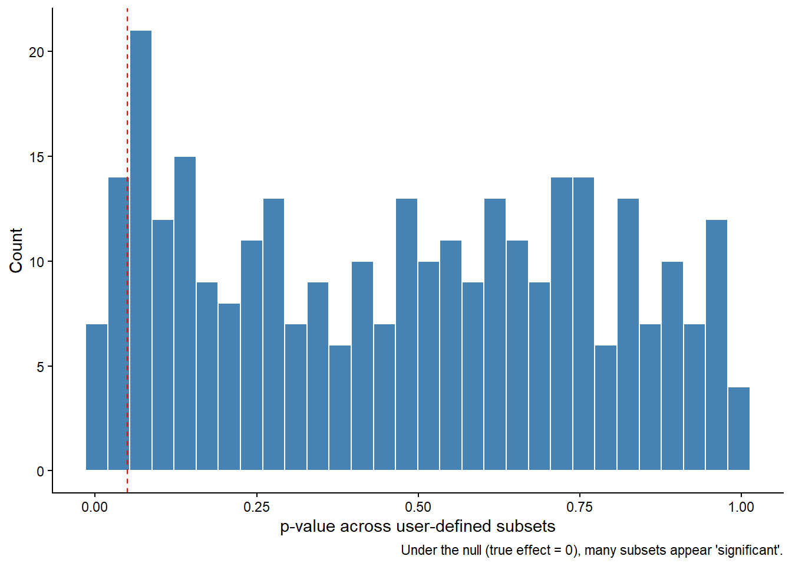

Dynamic Meta-analysis: When Transparency Meets Multiplicity
NoteTL;DR
Dynamic meta-analysis makes evidence synthesis interactive and transparent — but at a cost.
Each new filter or subset is effectively a new statistical test, multiplying the chance of false positives.
Used without safeguards, it can turn exploration into data dredging.
Used responsibly with hierarchical models, transparent logging, and strong uncertainty framing it becomes a powerful exploratory decision-support tool.
Transparency ≠ inference.
Dynamic meta-analysis should inform decisions, not replace pre-registered analyses.
1 Introduction
Dynamic meta-analysis tools, such as the DynaMeta app from the GLiTRS project let users interactively explore evidence: filtering by taxon, threat, location, or metric, and instantly updating effect sizes.
In principle, this bridges science and decision-making. It allows researchers, policymakers, or practitioners to explore context-specific results, increasing transparency and engagement.
But this very interactivity introduces a deep statistical challenge:
Every new filter combination is a new analysis.
When exploration is unconstrained, we create a multiple testing problem of enormous scale.
2 What makes dynamic meta-analysis different?
In a traditional meta-analysis, analysts define: a fixed dataset, a single analysis model, and a small number of pre-specified moderators or sensitivity checks.
In a dynamic meta-analysis, those decisions are handed to the user. They can change filters, subsets, moderators, and see the pooled effect in real time.
That interactivity is powerful…but statistically dangerous.
3 The multiple testing trap
Each time a user applies a new filter (“show only beetles”, “exclude North America”, “compare abundance metrics”), the system re-fits a meta-analytic model.
If we treat each of these as an implicit hypothesis test, “is there an effect?”, we quickly perform hundreds or thousands of overlapping tests.
3.1 The maths behind it
If each test uses a 5% significance threshold, the probability of finding at least one “significant” result after n explorations is:
\[
P(\text{at least one false positive}) = 1 - (1 - 0.05)^n
\]
After 20 filters: 64%.
After 100 filters: 99.4%.
So even if every true effect were zero, a dynamic meta-analysis session will almost certainly show several “significant” patterns purely by chance.
4 A quick simulation in R
The short R simulation below shows how easily “significant” results appear by chance in a dynamic meta-analysis even when there is no true effect at all.
We start by generating a fake meta-analytic dataset with:
600 study results (each representing an effect size such as a log response ratio),
three grouping factors — Taxon, Threat, and Region,
and a true mean effect of zero (so any “effect” we detect is random noise).
In a dynamic tool, users can filter these data by group for example, “show only beetles in Europe under habitat loss”. Each filter combination corresponds to a new subset of studies and therefore a new meta-analysis.
The code loops over all combinations of Taxon × Threat × Region, fits a random-effects model to each subset using metafor::rma(), and stores the p-value of the estimated overall effect.
When we plot those p-values, we see a roughly uniform distribution — just what you expect if there is truly no signal. However, many p-values still fall below 0.05. That’s not evidence of an effect — it’s the statistical reality of multiple testing.
Even with perfect data and methods, exploring many subsets virtually guarantees that some will appear “significant” by chance.
This is why uncorrected dynamic meta-analysis can so easily generate illusory patterns.
Code
set.seed(234)library(dplyr)library(purrr)library(metafor)library(ggplot2)# Simulate 600 studies with true effect = 0simulate_meta <-function(N =600, tau =0.1) { vi <-rgamma(N, shape =5, rate =50) yi <-rnorm(N, 0, sqrt(vi + tau^2))tibble(yi, vi,Taxon =sample(letters[1:10], N, TRUE),Threat =sample(LETTERS[1:8], N, TRUE),Region =sample(1:5, N, TRUE))}meta_df <-simulate_meta()fit_re <-function(dat) {tryCatch({rma(yi, vi, data = dat, method ="REML")$pval }, error =function(e) NA)}# each combination of Taxon x Threat x Region = a "user filter"pvals <- meta_df %>%group_by(Taxon, Threat, Region) %>%group_split() %>%map_dbl(fit_re)#mean(pvals < 0.05, na.rm = TRUE)ggplot(data.frame(p=pvals), aes(x=p)) +geom_histogram(bins=30, fill="steelblue", colour="white") +geom_vline(xintercept =0.05, linetype="dashed", colour="red") +labs(x="p-value across user-defined subsets", y="Count",caption="Under the null (true effect = 0), many subsets appear 'significant'.")+theme_classic()

The illusion of context sensitivity in Dynamic meta-analysis is often justified as context-sensitive evidence.
That is a good goal — we do need contextually relevant syntheses.
However, the problem arises when users interpret dynamically generated results as confirmatory evidence, rather than exploratory insight.
A “significant” effect appearing only when you filter to a specific taxon–region–threat combination could mean:
a real ecological interaction,
or just a statistical artefact from dozens of filters tried.
Living meta-analyses are at risk from repeated updates; Dynamic meta-analyses are at risk from infinite exploration.
6 Why this is especially acute in ecology?
Ecological datasets are messy, heterogeneous, and context-dependent. That makes dynamic tools look very informative — but also means spurious patterns are common.
High heterogeneity: random subsets can look meaningfully different.
Small sample sizes: filtering can reduce studies per subset to very low numbers.
Multiple correlated outcomes: abundance, richness, diversity, etc.
Strong user bias: stakeholders may (unintentionally) “filter until significant”.
6.1 Practical safeguards
Dynamic meta-analysis can still be used responsibly.
Here are practical guard-rails:
Risk
Mitigation
Inflated false positives
Emphasise effect sizes and confidence intervals, not p-values.
Data dredging by users
Record all filters and model runs in a log.
Small-N subsets
Display warnings (“Fewer than 10 studies – exploratory only”).
Context interpretation
Require users to download model outputs with metadata and caveats.
Multiple comparisons
Replace separate fits with hierarchical models (partial pooling).
Reproducibility
Stamp every analysis with data and model version numbers.
Misuse by decision-makers
Frame as exploratory decision-support, not as inferential evidence.
7 Hierarchical shrinkage: a simple fix
Dynamic meta-analyses may include a hierarchical (multi-level) model, but only in the narrow sense of accounting for non-independence among effect sizes within the same study (e.g., multiple outcomes reported in one paper). This is good practice, it corrects for pseudoreplication and gives more realistic standard errors.
However, this structure does not protect against the cross-sectional multiplicity created when users repeatedly subset the data by taxon, threat, or region.
Those grouping factors are not part of the model’s random or fixed structure, they only appear as filters that generate new, separate analyses.
So even though each model is hierarchical at the study level, the overall framework is still many models run independently, not one coherent multilevel model that estimates group-level deviations jointly.
In other words, the hierarchy controls dependence within studies, not dependence across user-defined subsets.
Each time a user filters for a new taxon or region, they are fitting a new model with new random effects. That does nothing to correct for the fact that there are dozens (or hundreds) of overlapping subset analyses happening — the source of the multiple-testing inflation.
To truly address multiplicity, we need a global hierarchical model with random (or fixed) effects for taxon, region, threat, etc., estimated simultaneously.
That model would “share strength” across groups and naturally shrink noisy subgroup estimates toward the grand mean.
By contrast, the per-subset approach used in dynamic apps provides no shrinkage across filters, so noisy subgroups can easily appear significant by chance.
WarningA hierarchy in name only
Dynamic meta-analyses often use a “hierarchical” model,
but the hierarchy stops at the study level.
It corrects for non-independence within papers,
not for multiplicity across the hundreds of subsets that users can explore.
To control false positives, we need a meta-hierarchical model
that includes the moderators (taxon, threat, region) as part of the structure —
not as filters.
Meta-hierarcichal models naturally mitigate multiple testing. Instead of re-fitting one model per subset, you estimate group-level deviations from a shared mean, allowing for partial pooling.
Code
mv <-rma.mv(yi, vi, random =~1| Taxon/Threat/Region,data = meta_df, method ="REML")mv
Multivariate Meta-Analysis Model (k = 600; method: REML)
Variance Components:
estim sqrt nlvls fixed factor
sigma^2.1 0.0000 0.0000 10 no Taxon
sigma^2.2 0.0000 0.0000 80 no Taxon/Threat
sigma^2.3 0.0095 0.0976 312 no Taxon/Threat/Region
Test for Heterogeneity:
Q(df = 599) = 765.6013, p-val < .0001
Model Results:
estimate se zval pval ci.lb ci.ub
0.0095 0.0131 0.7251 0.4684 -0.0162 0.0352
---
Signif. codes: 0 '***' 0.001 '**' 0.01 '*' 0.05 '.' 0.1 ' ' 1
These BLUPs (best linear unbiased predictions) are shrunken towards the grand mean reducing extreme, noisy results.
In short: one model, many groups beats many models, one group at a time.
7.1 Communicating uncertainty
The danger of dynamic tools is not the maths, it is the interpretation.
To communicate responsibly:
Avoid “significant” / “non-significant” language.
Display sample size and heterogeneity (I²) prominently.
Use colour gradients for effect magnitude, not binary flags.
Provide confidence or credible intervals visually.
Explain that changing filters changes the question, not just the answer.
8 Final thoughts
Dynamic meta-analysis is a huge step forward for transparency and engagement — but also a step closer to the edge of statistical overconfidence.
It turns a single meta-analysis into an ecosystem of possible analyses, where exploration is cheap and inference is fragile.
Used carefully, it can empower context-sensitive decision-making. Used naively, it can generate an illusion of evidence.
The solution is not to abandon dynamic tools, but to design them responsibly:
build in warnings, logs, and shrinkage,
frame results as exploratory,
and keep the philosophy of meta-analysis combining evidence, not slicing it thin at the centre.
Dynamic meta-analysis can democratise evidence synthesis — but only if we democratise statistical literacy alongside it.